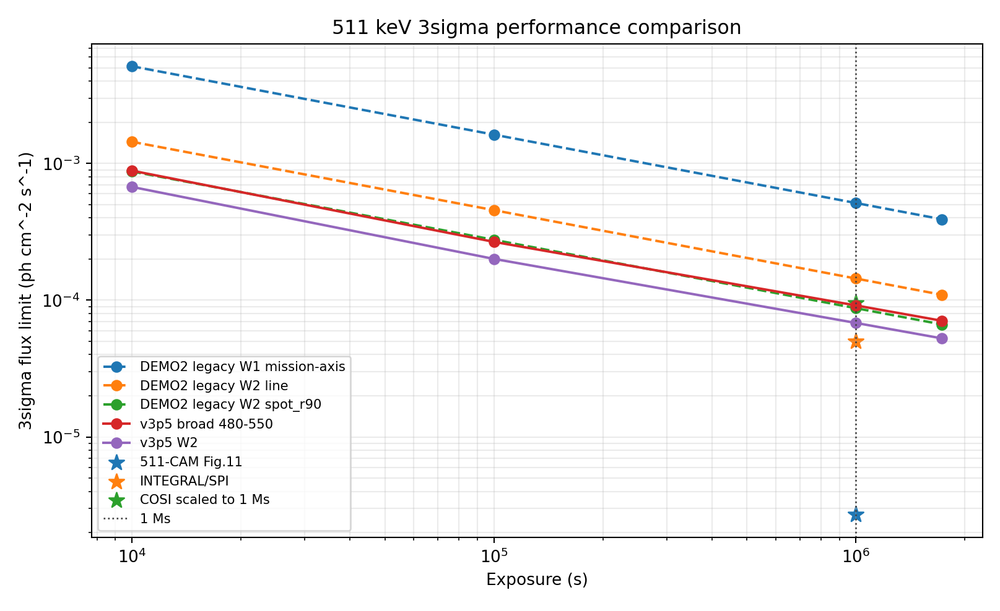
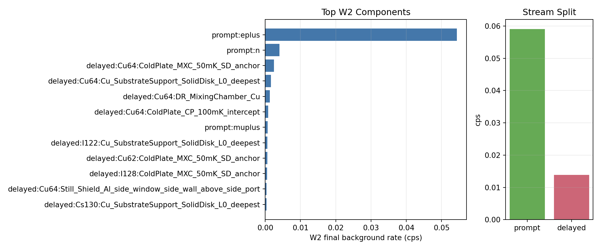

v3p5 Full-Stat Performance and W2 Background Closure
Technical Summary
The full-stat v3p5 center-finger chain closes through Step02, Step05, Step06, Step07, Step08, the 1 Ms benchmark comparison, and the W2 background-source decomposition. Boundary sidecars also close the 45 deg LOS normalization and fixed-template annular spatial-likelihood checks. This is still an L1 result suitable for branch comparison and next-step planning; Exact-RPIP PointSource sampling is smoke-validated, but fixed-inventory production delayed transport remains pending.
1 Ms Performance Comparison
The chart compares the full-stat v3p5 W2 curve with legacy pre-fix DEMO2 cases and public benchmark markers. The DEMO2 markers are retained as historical provenance after the reproduced x8.0116 delayed-source normalization issue. The 511-CAM point is figure-derived, SPI is a published 1e6 s marker, and COSI is sqrt-time scaled from a published 2-year sensitivity.

| Case | 1 Ms 3sigma flux | Method |
|---|---|---|
| v3p5 W2 | 6.823007e-05 | v3p5_time_dependent_cumulative_interpolation |
| DEMO2 legacy W2 spot_r90 | 8.748416e-05 | legacy_pre_fix_documented_20d_Z_sqrt_exposure_scaling |
| DEMO2 legacy W2 line | 1.441678e-04 | legacy_pre_fix_documented_20d_Z_sqrt_exposure_scaling |
| 511-CAM Fig.11 | 2.700000e-06 | digitized_from_511CAM_Fig11_right_panel_at_511keV |
| INTEGRAL/SPI | 5.000000e-05 | published_3sigma_1e6s_511keV_narrow_line |
| COSI scaled to 1 Ms | 9.533409e-05 | sqrt_time_scaled_from_published_2yr_3sigma_narrow_line_point_source_sensitivity |
W2 Background Source Mix
The decomposition recomputes the same W2 active-veto and side-entry Compton/FoV selection used by Step05. The leading selected component is prompt:eplus, with 80 events and 0.0543377 cps. The delayed slice is small; within delayed-only W2 events, Cu64 is the largest nuclide.

Scope, Data, And Method
W2 is 510.58-511.42 keV; the reference flux is 1e-4 ph cm^-2 s^-1; 1 Ms is 1,000,000 s. Step02 produces the full-stat prompt, buildup, delayed source, and delayed transport; Step05 applies detector selection; Step06-08 fold mission time and counting significance.
Boundary Closure Sidecars
The sidecar package closes two previously open analysis boundaries without new transport: the 45 deg side-entry LOS normalization and a fixed-template annular spatial likelihood. The delayed-source exact-position method is smoke-validated; the remaining boundary is productionizing it with the fixed inventory and rerunning delayed transport.
Limitations And Robustness Checks
- This fullstat_v2 closure is the conservative radial-profile baseline cross-check; fullstat_v2_exactpos is the current rate authority after the M/seed convergence report.
- This is an L1 rate-level full-stat closure; boundary sidecars close the 45 deg LOS normalization and fixed-template annular spatial-likelihood checks, but they are not a nuisance-profile publication analysis.
- The production delayed transport still uses the legacy axisymmetric RadialProfileBeam compression for v3p5; exact-RPIP PointSource sampling is smoke-validated but not yet rerun at fixed-inventory production scale.
- 511-CAM is figure-derived from Fig.11; COSI is sqrt-time scaled from a published 2-year sensitivity and is a benchmark marker, not an observing-strategy equivalence.
- Flux limits use Gaussian S/sqrt(B)=3 scaling for comparison consistency.
Sources And Artifacts
Primary repo artifacts are copied into summaries/, tables/, and assets/. DEMO2/new_geo_re comparison values come from legacy pre-fix core_md/README.md and core_md/VALIDATION.md records; they are not current authority after the reproduced x8.0116 delayed-source normalization issue. The legacy stepwise_3sigma_headline_results.png file named in older notes is absent in this checkout. External benchmark sources: 511-CAM, SPI, and COSI.